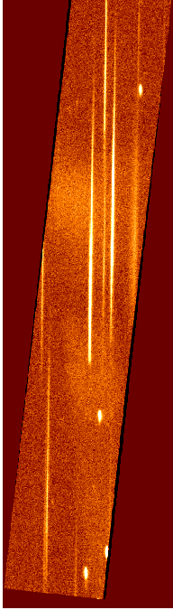

XMM-Newton Science Analysis System
omgchain (omgchain-1.11.1) [xmmsas_20170112_1337-16.0.0]
Future developments
Spectrophotometry and wavelength calibration is undergoing
improvement. The proper use of grism-specific CAL
routines to be introduced. Further tests, checks
and improvements of the spectra extraction algorithms will be
made. An interactive task for visual inspection and spectral
extraction is being developed. Spectrum smoothing possibility to be
introduced. Coincidence loss correction to be included.
Figure 3:
Original grism image (no Mod-8 correction applied,
no rotation); visual spectral band
 |
Figure 4:
Mod-8 noise corrected and rotated grism image;
visual spectral band
|  |
Figure 5:
Visual-grism image with the sources detected
by omdetect
(the source regions are marked with
the green ellipses)
|
Figure 6:
Spectrum extracted from the image Fig.5
by omgrism
(corresponds to the lowest source in
Fig.5)
|
Figure 7:
UV-grism image (mod-8 noise corrected; image rotated).
Note two zero-order spectra overlapping the first order spectrum
(target).
|
Figure 8:
Spectrum extracted from the image Fig.7
by omgrism. Note a zero-order spectrum oberlapping with
the first-order target spectrum.
|
XMM-Newton SOC/SSC -- 2017-01-12